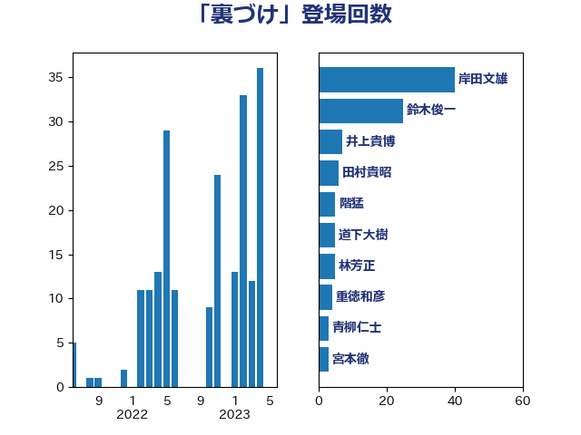

単語「裏づけ」

| 岸田文雄 | 自由民主党 | 40 回 |
| 鈴木俊一 | 自由民主党 | 25 回 |
| 井上貴博 | 自由民主党 | 7 回 |
| 田村貴昭 | 日本共産党 | 6 回 |
| 階猛 | 立憲民主党 | 5 回 |
| 道下大樹 | 立憲民主党 | 5 回 |
| 林芳正 | 自由民主党 | 5 回 |
| 重徳和彦 | 立憲民主党 | 4 回 |
| 青柳仁士 | 日本維新の会 | 3 回 |
| 宮本徹 | 日本共産党 | 3 回 |
| 伴野豊 | 立憲民主党 | 3 回 |
| 高橋英明 | 日本維新の会 | 2 回 |
| 高木啓 | 自由民主党 | 2 回 |
| 阿部司 | 日本維新の会 | 2 回 |
| 鈴木義弘 | 国民民主党 | 2 回 |
| 鈴木庸介 | 立憲民主党 | 2 回 |
| 足立康史 | 日本維新の会 | 2 回 |
| 福田昭夫 | 立憲民主党 | 2 回 |
| 森山浩行 | 立憲民主党 | 2 回 |
| 枝野幸男 | 立憲民主党 | 2 回 |
| 末松信介 | 自由民主党 | 2 回 |
| 木原稔 | 自由民主党 | 2 回 |
| 新藤義孝 | 自由民主党 | 2 回 |
| 岡本三成 | 公明党 | 2 回 |
| 宮本岳志 | 日本共産党 | 2 回 |
| 堀井学 | 自由民主党 | 2 回 |
| 城井崇 | 立憲民主党 | 2 回 |
| 和田有一朗 | 日本維新の会 | 2 回 |
| 長友慎治 | 国民民主党 | 1 回 |
| 鎌田さゆり | 立憲民主党 | 1 回 |
| 金村龍那 | 日本維新の会 | 1 回 |
| 赤澤亮正 | 自由民主党 | 1 回 |
| 角田秀穂 | 公明党 | 1 回 |
| 西村明宏 | 自由民主党 | 1 回 |
| 西岡秀子 | 国民民主党 | 1 回 |
| 若林健太 | 自由民主党 | 1 回 |
| 若宮健嗣 | 自由民主党 | 1 回 |
| 美延映夫 | 日本維新の会 | 1 回 |
| 福島伸享 | 無所属 | 1 回 |
| 神谷裕 | 立憲民主党 | 1 回 |
| 田所嘉徳 | 自由民主党 | 1 回 |
| 湯原俊二 | 立憲民主党 | 1 回 |
| 渡辺周 | 立憲民主党 | 1 回 |
| 津島淳 | 自由民主党 | 1 回 |
| 河野太郎 | 自由民主党 | 1 回 |
| 永岡桂子 | 自由民主党 | 1 回 |
| 武田良太 | 自由民主党 | 1 回 |
| 新垣邦男 | 立憲民主党 | 1 回 |
| 斎藤アレックス | 国民民主党 | 1 回 |
| 斉藤鉄夫 | 公明党 | 1 回 |
| 掘井健智 | 日本維新の会 | 1 回 |
| 岩谷良平 | 日本維新の会 | 1 回 |
| 岡本あき子 | 立憲民主党 | 1 回 |
| 山本剛正 | 日本維新の会 | 1 回 |
| 小野泰輔 | 日本維新の会 | 1 回 |
| 小山展弘 | 立憲民主党 | 1 回 |
| 小宮山泰子 | 立憲民主党 | 1 回 |
| 小倉將信 | 自由民主党 | 1 回 |
| 守島正 | 日本維新の会 | 1 回 |
| 奥野総一郎 | 立憲民主党 | 1 回 |
| 大西健介 | 立憲民主党 | 1 回 |
| 吉田久美子 | 公明党 | 1 回 |
| 古屋範子 | 公明党 | 1 回 |
| 北神圭朗 | 無所属 | 1 回 |
| 住吉寛紀 | 日本維新の会 | 1 回 |
| 井上信治 | 自由民主党 | 1 回 |
| 中根一幸 | 自由民主党 | 1 回 |
| 中川郁子 | 自由民主党 | 1 回 |
| 中山展宏 | 自由民主党 | 1 回 |